Projektuję oraz wdrażam dedykowane systemy analizy i przetwarzania obrazu.
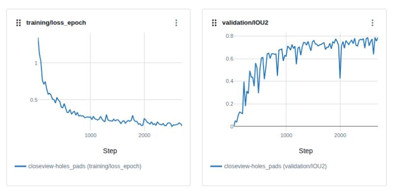
Monitorowanie, analiza i porównywanie krzywych uczenia tj. strata i dokładność na zbiorach treningowych oraz walidacyjnych. Model detekcji obiektów o geometrii kołowej (otwory montażowe oraz pady testowe na płytkach PCB).
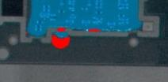
Opracowanie algorytmu pozycjonowania i porównywania obrazu ze wzorcem do detekcji przezroczystego lakieru ochronnego na płytkach drukowanych w świetle UV. Wykorzystanie uczenia nienadzorowanego (analiza odległości od centroidów) do weryfikacji pokrycia w trzech strefach: koniecznej, zakazanej i obojętnej.
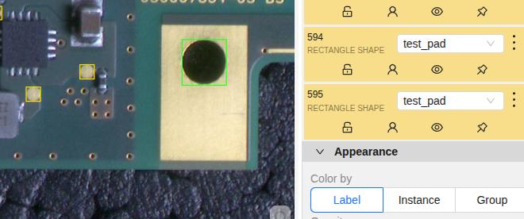
Wdrożenie i utrzymanie lokalnej platformy (on-premise) do anotacji danych. Służy do strukturyzacji zbiorów pod kątem uczenia maszynowego lub sztucznej inteligencji. Podział na projekty i klasy w adnotacjach typu bounding boxes.
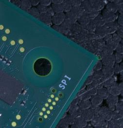
Opracowanie algorytmu autoadnotacji zdjęć płytek drukowanych (PCB) przy użyciu geometrii modeli CAD. System dopasowuje warstwy projektowe CAD do obrazu z kamery na zaledwie kilku wskazanych przez użytkownika punktów bazowych (narożniki, wybrane pady lub otwory). Następnie automatycznie generuje etykiety (bounding boxes oraz point references) dla pozostałych kilkudziesięciu elementów płytki.
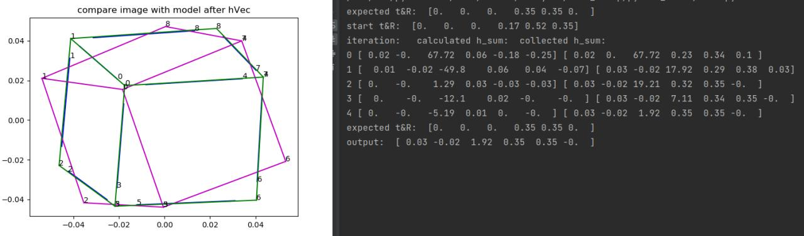
Opracowanie prototypu (Proof of Concept) systemu dopasowania trójwymiarowego modelu CAD do płaskiego zdjęcia 2D, na podstawie klasycznego podejścia Davida G. Lowe'a. Projekt obejmował analizę matematyczną rzutowania perspektywicznego, implementację obliczeń macierzy przekształceń geometrycznych oraz wyznaczanie pozycji obiektu w przestrzeni (6DoF).
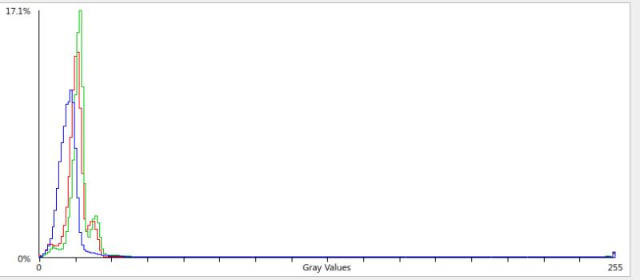
Opracowanie systemu dynamicznej regulacji ekspozycji kamery, opartego na analizie rozkładu jasności pikseli w kanałach RGB oraz skali szarości. Algorytm na bieżąco monitoruje histogram obrazu pod kątem prześwietleń (clipping w jasnych partiach) oraz niedoświetleń, automatycznie dostosowując parametry akwizycji do panujących warunków oświetleniowych.
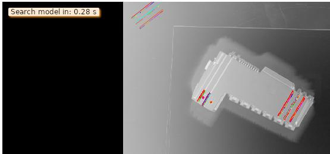
Research, opracowanie oraz implementacja algorytmu dopasowania wzorca graficznego (Shape-Based / Template Matching) do obiektów o złożonej geometrii (obudowy komponentów) przy użyciu oprogramowania MVTec Halcon. System wykrywa pozycję detalu w przestrzeni roboczej, realizując lokalizację krawędzi, otworów oraz linii referencyjnych w czasie rzeczywistym.
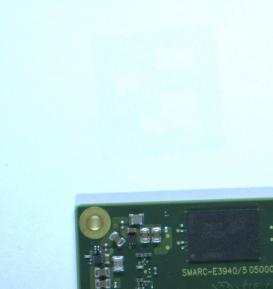
Implementacja algorytmu HDR (High Dynamic Range) do akwizycji obrazów płytek elektronicznych o wysokim poziomie kontrastu. System łączy serię zdjęć wykonanych z różnymi czasami naświetlania, aby jednocześnie odwzorować ciemne elementy matowe (np. struktura laminatu, obudowy układów scalonych) oraz jasne, refleksyjne powierzchnie metaliczne (np. luty, pady, miedziane ścieżki, jasne tło).
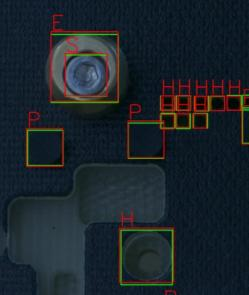
Przygotowanie dedykowanego zbioru danych, nadzór nad procesem anotacji oraz wytrenowanie detektora obiektów opartego na architekturze Faster R-CNN. Projekt obejmował klasyfikację wielu małych i nachodzących na siebie elementów montażowych (m.in. śruby, podkładki, otwory i piny referencyjne) na zróżnicowanych tłach.
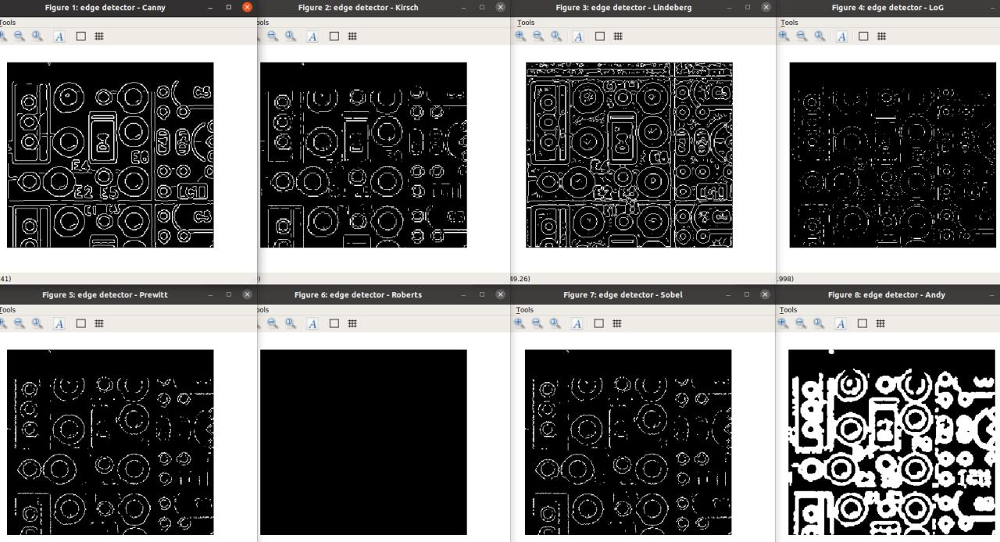
Przeprowadzenie analizy i benchmarku klasycznych metod filtracji przestrzennej oraz detekcji krawędzi na obrazach płytek drukowanych (PCB). Projekt obejmował implementację oraz testy porównawcze operatorów różniczkowych i gradientowych (Canny, Sobel, Prewitt, Roberts, Kirsch, Laplacian of Gaussian - LoG, Lindeberg).
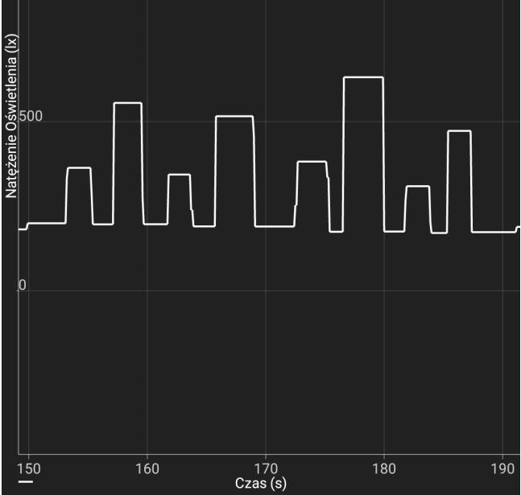
opis
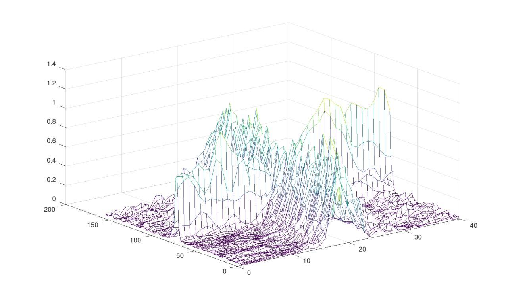
Zaprojektowanie i wdrożenie produkcyjnego algorytmu kalibracji ostrości. Faza badawcza, prototypowanie matematyczne, analiza sumarycznego rozkładu gradientów krawędzi jako miary ostrości sceny. Kod zoptymalizowane pod kątem kalibracji wszystkich kamer produkcyjnych.
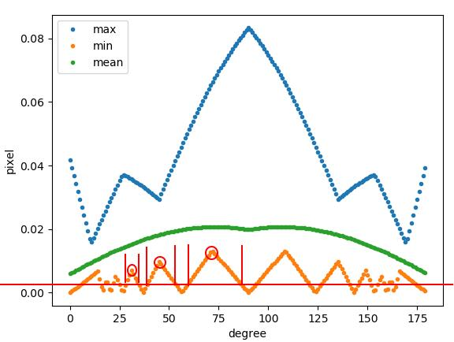
Zaprojektowanie i wdrożenie algorytmu analizy przestrzennej, służącego do wyznaczania optymalnego kąta obrotu elementu (w zakresie 0-180 stopni) względem osi kamery. System analizuje statystyki pikseli (wartości maksymalne, minimalne i średnie) w celu znalezienia punktów krytycznych gwarantujących maksymalną ekspozycję detali geometrycznych podczas skanowania triangulacyjnego.
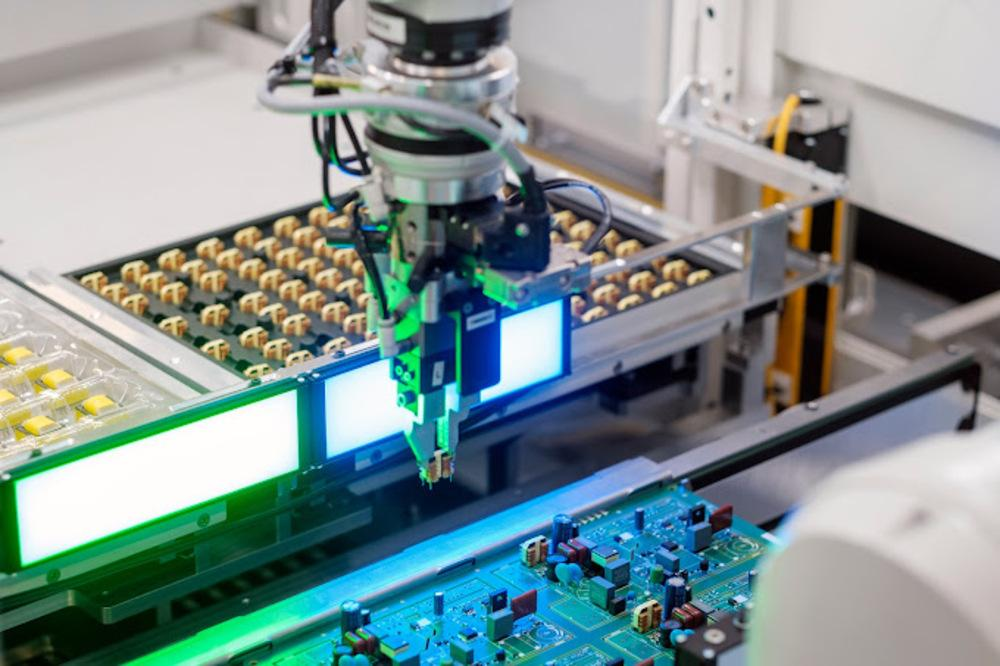
Zaprojektowanie i przeprowadzenie testów walidacyjnych algorytmu rekonstrukcji przestrzennej, przy użyciu pojedynczej kamery przemysłowej. Zamiast klasycznego układu stereowizyjnego, stanowisko wykorzystywało ramię robota do precyzyjnego obracania podzespołu elektronicznego przed obiektywem kamery, w celu uzyskania sekwencji obrazów pod różnymi kątami i odtworzenia geometrii metodą triangulacji.
Projektowanie oraz implementacja algorytmów wizyjnych (klasycznych i Deep Learning) do automatycznej kontroli jakości na liniach produkcyjnych, wykrywania anomalii powierzchniowych, mikropęknięć oraz klasyfikacji komponentów elektronicznych (PCB).
Opracowywanie wydajnych modułów sterowania obrazem bezpośrednio w C++ i Pythonie. Wdrożenia systemów automatycznego ustawiania ostrości (Autofocus), dynamicznej kontroli ekspozycji (HDR, analiza histogramu RGB) oraz eliminacji zakłóceń oświetlenia zewnętrznego.
Tworzenie algorytmów przestrzennych analizujących pozycję i geometrię obiektów. Doświadczenie w triangulacji jednoaparatowej z wykorzystaniem rotacji robotycznej, estymacji pozy 3D (6DoF) oraz optymalizacji kąta widzenia kamer dla systemów klasy Bin Picking.
Budowa ekosystemów MLOps i platform adnotacji danych (CVAT) w architekturze on-premise z użyciem Dockera. Projektowanie autorskich skryptów autoadnotacji danych wizyjnych na podstawie plików inżynieryjnych CAD, skracających czas przygotowania zbiorów treningowych.
Masz pytania dotyczące wdrożenia Computer Vision w Twoim projekcie? Napisz lub zadzwoń bezpośrednio do mnie.